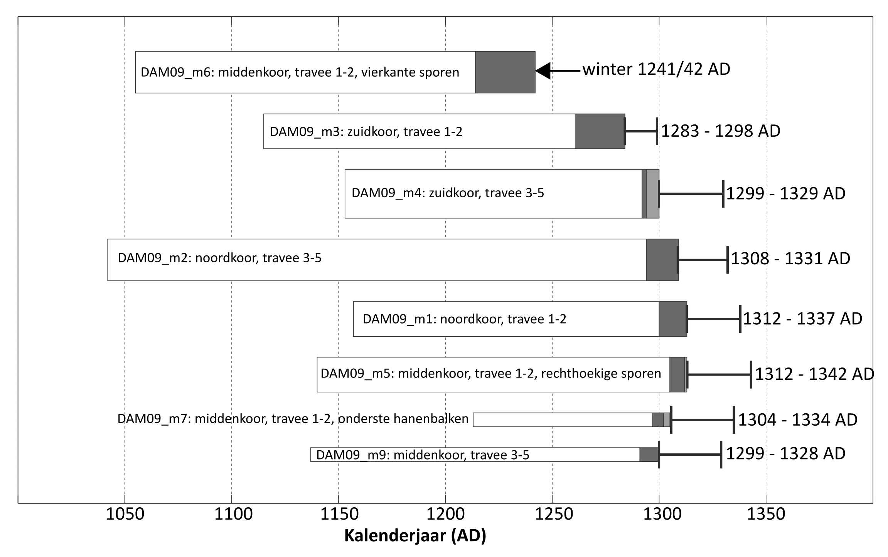
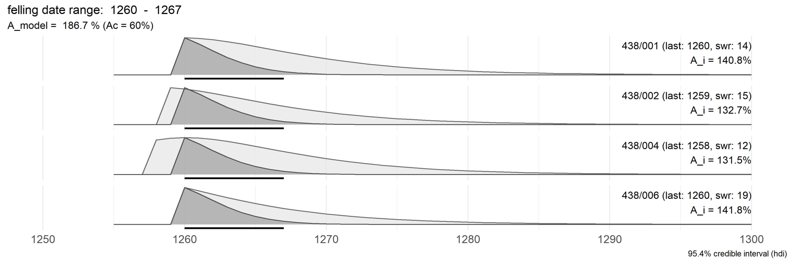
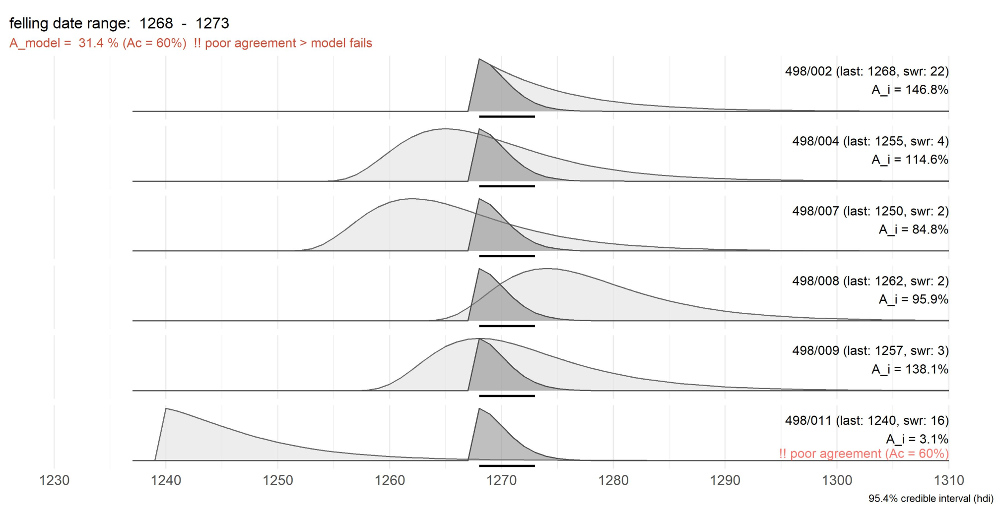
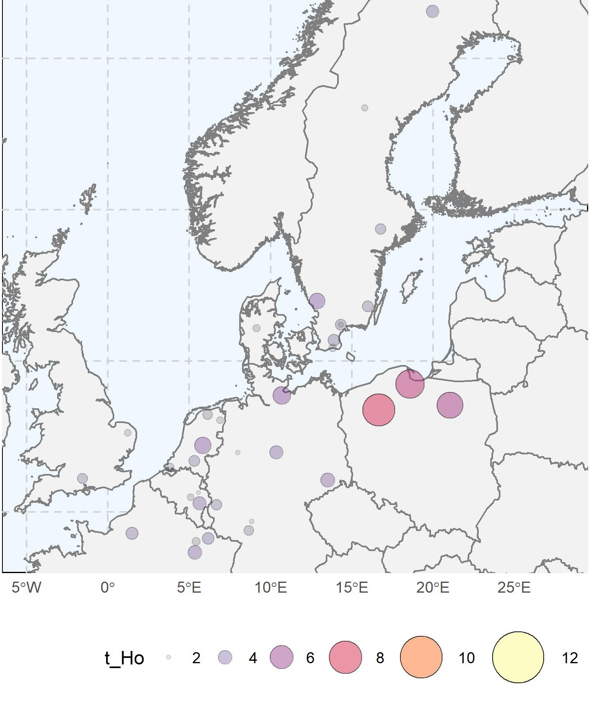

10.1 Veldatum
Het uiteindelijke doel van een dendrochronologische analyse is de veldatum te bepalen van de boom waaruit het onderzochte stuk hout afkomstig is. Een eerste stap in dit proces is het zoeken naar een betrouwbare overeenkomst tussen het opgemeten jaarringpatroon en de beschikbare referentiekalenders. Indien dit een goed resultaat oplevert, is het jaarringpatroon exact gedateerd. Van elke jaarring is dan geweten in welk kalenderjaar deze is gevormd. Om vanuit een gedateerd jaarringpatroon de veldatum af te leiden, kunnen er zich drie situaties voordoen (fig. 10.1):
- indien de wankant nog aanwezig is, kan de veldatum tot op het jaar, en in sommige gevallen zelfs tot op het seizoen nauwkeurig bepaald worden. De datering én de anatomische opbouw van de laatste ring uit het jaarringpatroon is hierbij van belang. Is de boom gekapt aan het einde van het groeiseizoen, dan zal de laatste groeiring volgroeid zijn (vroeghout én laathout). Werd de boom echter aan het begin van het groeiseizoen gekapt, dan zal een onvolledige groeiring te zien zijn die enkel uit vroeghout bestaat. Bij sommige houtsoorten, zoals eik, kan aan de hand van de anatomische opbouw van die laatste gevormde ring de kapdatum tot op het seizoen bepaald worden. In deze situatie krijgen we de meest precieze bepaling van een veldatum;
- tijdens het omvormen van een stam tot balk of plank, gaan dikwijls de schors en (een deel van) het spinthout verloren. Als echter nog een deel van het spinthout bewaard is gebleven, weten we dat er slechts een beperkt aantal ringen – en dus jaren – ontbreken tussen de laatste opgemeten ring en de wankant. Bij eik is de spreiding op het aantal spinthoutringen relatief constant, en kan er een onderbouwde schatting gemaakt worden van het aantal ontbrekende spinthoutringen. In dit geval is de veldatum te situeren binnen een concreet tijdsinterval. We kunnen dan zowel de vroegst mogelijke veldatum (terminus post quem) bepalen als de uiterste tijdsgrens voor het vellen van de boom (terminus ante quem);
- als er alleen maar kernhout bewaard is, kan enkel de vroegst mogelijke veldatum bepaald worden (terminus post quem). De kapdatum ligt dan zeker ná de datering van de laatste kernhoutring, met daarbij opgeteld het minimale aantal te verwachten spinthoutringen.
Het uiteindelijke doel van een dendrochronologische analyse is de veldatum te bepalen van de boom waaruit het geanalyseerde stuk hout afkomstig is.
In het minst gunstige geval is de uitkomst van het dendrochronologisch onderzoek dat het opgemeten jaarringpatroon geen overeenkomst vertoont met de beschikbare referentiekalenders. In dat geval blijft het stuk hout ongedateerd.
Bij de interpretatie is het van belang bovenstaande situaties telkens goed te rapporteren. Een terminus post quem datering geeft alleen de vroegst mogelijke veldatum aan, maar geeft geen indicatie hoe veel later die dan wel kan liggen. Indien nog spinthout aanwezig is, kan zoals gezegd soms een interval bepaald worden waar binnen de werkelijke veldatum zich situeert. Enkel indien de wankant bewaard is gebleven kunnen we het tijdstip van het kappen van de boom tot op het jaar precies, en soms tot op het seizoen exact bepalen. Dit valt samen te vatten in een grafische voorstelling aan de hand van een staafdiagram (fig. 10.2).

10.2 Van veldatum tot bouwfase
Indien er meerdere stukken hout uit eenzelfde bouwfase gedateerd kunnen worden, is het aangewezen deze onderling te vergelijken. Zo wordt duidelijk of ze allen effectief dezelfde bouwactiviteit kunnen dateren. Dit is uiteraard enkel van toepassing indien meerdere stukken met spinthout (of schors/wankant)gedateerd werden. Met postquem-dateringen kan deze analyse meestal niet gemaakt worden. Voor de gedateerde reeksen met spinthout wordt dan telkens het interval waar binnen de veldatum kan liggen berekend en daarna geëvalueerd indien deze voldoende overlapt met de andere reeksen. Indien dit effectief het geval is, kan een gemeenschappelijke veldatum berekend worden die het interval afbakent voor een gemeenschappelijke veldatum (fig. 10.3). Dit levert meestal een nauwere afbakening op van de veldatum, en de daarvan afgeleide datering van de bouwactiviteit.

10.3 Hergebruik en herstelling
Volgend op de bepaling van de veldatum, zijn er meerdere factoren die de datering van het bouwen van de onderzochte houten structuur of het object kunnen bijsturen. Zijn er bijvoorbeeld sporen van hergebruik op het geanalyseerde stuk bouwhout te zien, dan is de datering van dit stuk hout niet gerelateerd aan de datering van de structuur die men onderzoekt. De dendrochronologische datering verwijst dan naar het gebruik van dit stuk hout in een oudere constructie, en geeft dan enkel een terminus post quem aan voor de geanalyseerde structuur. Kunnen binnen één structuur meerdere stukken hout gedateerd worden, en heeft één een beduidend jongere kapdatum, dan wijst dit mogelijk op een latere herstelling waarbij een nieuw stuk hout werd gebruikt. Ook in dit geval heeft deze datering geen betrekking op de bouw, maar op een vroegere activiteit.

10.4 Oorspronggebied
Eens een jaarringreeks of kalender gedateerd is, kan men ook een poging wagen om het oorsprongsgebied van het hout te achterhalen: de regio waar de bomen oorspronkelijk groeiden vooraleer ze werden gekapt. Bij een provenance analyse wordt de gedateerde reeks of kalender vergeleken met een referentiekalenders die verondersteld worden om het karakteristieke jaarrinpatroon voor een bepaalde regio en periode weer te geven. De overeenkomst tussen de opgemeten jaarringreeksen of -kalenders en de geografisch gebonden referentiekalenders wordt via statistische parameters uitgedrukt en meestal ook weergegeven op een kaart (fig. 10.5). De cirkels op de kaart geven ongeveer de regio aan waar een referentiekalender voor beschikbaar is (voor dezelfde houtsoort en periode overspannen door de gedateerde jaarringreeksen) en de grootte (diameter) van de cirkels geeft de maat van overeenkomst weer tussen beide. Grote cirkels die geconcentreerd liggen in een zelfde regio geven aan dat het oorsprongsgebied van het hout waarschijnlijk ook daar te situeren is. De correlatiewaarden moeten echter wel voldoende hoog zijn en in de veronderstelde regio van oorsprong ook beduidend hoger liggen dan omringende regio’s om tot een betrouwbare herkomst bepaling te komen.

In sommige gevallen kan een niet-lokale oorsprong van historisch bouwhout ook afgeleid worden uit opvallende uitsparingen in of merktekens op bepaalde elementen van een constructie (fig. 10.6). Dergelijke doorboringen en/of pennen - die geen verband houden met de huidige samenstelling en verbindingen in een houtconstructie - werden gebruikt bij het samenstellen van grote houtvlotten met pas gevelde boomstammen. De houtvlotten werden langs de grote rivieren naar houtmarkten en steden stroomafwaarts gevlot, waar het hout uiteindelijk werd verhandeld as bouwmateriaal. Indien dergelijke vlotverbindingen worden opgemerkt, mag men er vnuit gaan dat dit bouwhout geen lokale oorsprong heeft. Een doorgedreven jaarringanalyse (dendro-provenancing) kan dan het oorspronggebied nader helpen bepalen.